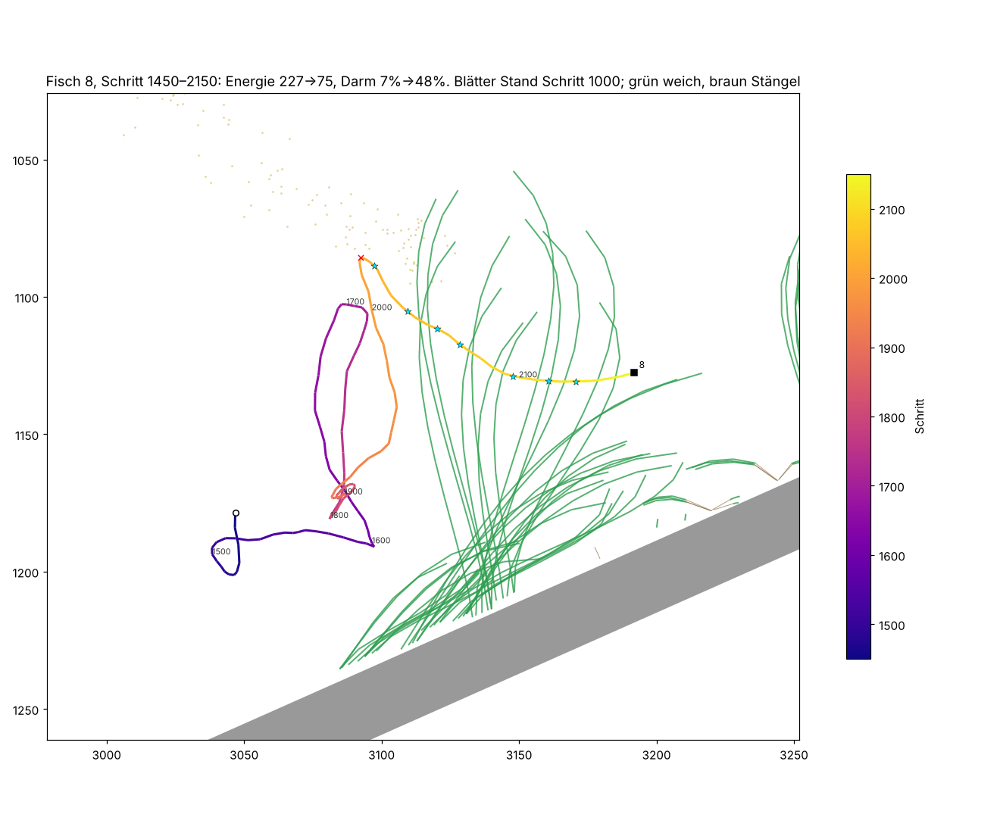

Weg, Nahrung und Steuerung zum selben Zeitpunkt.

Beobachten, Eltern wählen, mutierte Nachkommen vergleichen.
Hier erscheinen je Generation die Verteilung der Zielwerte, Eltern und Nachkommen. Für diese historische Aufnahme liegen keine abgeschlossenen Zuchtrunden vor.
Entwurfsdaten: Fable, Liora / Welt 18731, 12.11.2026, alter Engine-Stand. Die Bilder und TSV-Reihen werden zur Gestaltung verwendet; daraus folgt keine Aussage über die aktuelle Fischversion. Bedienung hier verändert nur den Entwurf.